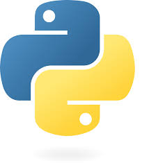
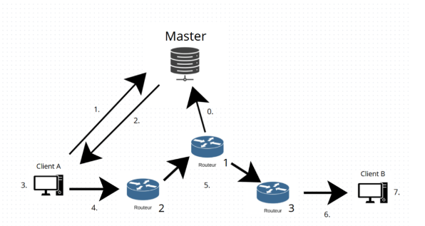
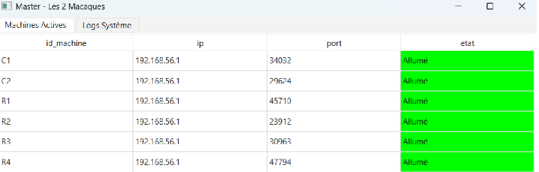
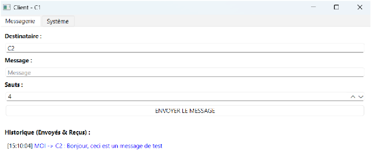

Résumé de la SAESAE Summary
Au cours de cette SAE, nous devions réaliser une messagerie chiffrée en During this SAE, we had to develop an encrypted messaging application in Python, ainsi que créer une infrastructure de routage "en oignon" avec un serveur master, des routeurs et des clients. Le but était que le message soit encapsulé couche par couche grâce à un algorithme de chiffrement asymétrique de type , as well as create an "onion" routing infrastructure with a master server, routers, and clients. The goal was to encapsulate the message layer by layer using a custom-made RSA "fait maison". Nous avons également réalisé de nombreuses documentations pour encadrer ce projet. asymmetric encryption algorithm. We also produced extensive documentation to support this project.
Consulter le projet et sa documentation sur GitHub View the project and its documentation on GitHubEnvironnement et OutilsEnvironment and Tools

Python (Sockets & Threads)
Développement de l'architecture distribuée en programmation orientée objet, gestion des connexions réseau (Sockets) et du parallélisme (Threading).Development of the distributed architecture using object-oriented programming, network connection management (Sockets), and parallelism (Threading).
PyQt6
Bibliothèque utilisée pour développer les interfaces graphiques (GUI) des différents clients et du tableau de bord de supervision du Master.Library used to develop graphical user interfaces (GUI) for the various clients and the Master's supervision dashboard.
MariaDB
Système de gestion de base de données relationnelle utilisé par le Master pour stocker les clés publiques, les IP et surveiller l'état des machines.Relational database management system used by the Master to store public keys, IPs, and monitor machine status.
Maths & SymPy
Création d'un algorithme RSA personnalisé avec génération de nombres premiers (SymPy), pgcd et algorithme d'Euclide étendu (inverse modulaire).Creation of a custom RSA algorithm with prime number generation (SymPy), gcd, and extended Euclidean algorithm (modular inverse).
Aperçu du système et des interfacesSystem and Interface Overview



Logique d'encapsulation "en oignon"Onion Encapsulation Logic
Voici un extrait de notre implémentation du chiffrement asymétrique (basé sur RSA). Étant donné que dans ce type d'algorithme, la taille de la donnée ne doit pas dépasser celle de la clé (N), les longs messages encapsulés multicouches posaient un problème. J'ai donc implémenté une fonction
Here is an excerpt of our asymmetric encryption implementation (based on RSA). Since in this type of algorithm, the data size must not exceed the key size (N), long multi-layer encapsulated messages posed a problem. I therefore implemented a chunk_message pour découper la chaîne en blocs de taille fixe (selon les octets de N) avant de les chiffrer individuellement et de les concaténer avec des séparateurs.
function to divide the string into fixed-size blocks (based on N's bytes) before encrypting them individually and concatenating them with separators.
def chunk_message(message, block_size):
"""Découpe le message en blocs de la taille maximale de la clé (N)""""""Divides the message into blocks of the maximum key size (N)"""
data = message.encode("utf-8")
return [data[i:i+block_size] for i in range(0, len(data), block_size)]
def chiffrement(message, pubkey):
"""Chiffre un message long en l'ayant découpé au préalable""""""Encrypts a long message by chunking it beforehand"""
SEP_BLOCK = '$$$'
SEP_PART = '$#$'
_, n = pubkey
block_size = (n.bit_length() - 1) // 8
blocks = chunk_message(message, block_size)
cipher_blocks, lengths = [], []
for block in blocks:
c, l = encrypt_block(block, pubkey) # pow(m, e, n)
cipher_blocks.append(c)
lengths.append(l)
# Reconstitution du payload chiffré final avec longueurs préservées# Reconstruction of the final encrypted payload with preserved lengths
message_chiffre_parts = []
for i in range(len(cipher_blocks)):
message_chiffre_parts.append(f"{cipher_blocks[i]}{SEP_BLOCK}{lengths[i]}")
return SEP_PART.join(message_chiffre_parts)Grandes étapes et Gestion de ProjetMain Steps and Project Management
1. Gestion et Planification1. Management and Planning
Mise en place d'un diagramme de Gantt pour planifier les tâches, utilisation de Git/GitHub pour le versionnage collaboratif du code, et définition stricte du cahier des charges en amont.Implementation of a Gantt chart to schedule tasks, use of Git/GitHub for collaborative code versioning, and strict definition of specifications upfront.
2. Chiffrement et Maths2. Encryption and Mathematics
Développement de l'algorithme asymétrique "maison". Création d'un module de génération de nombres premiers, calcul de l'inverse modulaire, et gestion des limites de taille de blocs.Development of the custom asymmetric algorithm. Creation of a prime number generation module, calculation of the modular inverse, and block size limit management.
3. Architecture et Sockets3. Architecture and Sockets
Programmation Orientée Objet pour créer les classes Object-Oriented Programming to create the RouteurRouter et and Client (qui hérite de Routeur). Gestion des connexions TCP via Sockets et mise en place du multithreading pour écouter et relayer simultanément. (inheriting from Router) classes. TCP connection management via Sockets and implementation of multithreading to listen and relay simultaneously.
4. Documentation
Rédaction d'une documentation complète : manuel d'installation pas-à-pas (dépendances Python, MariaDB), manuel d'utilisation avec exemples d'exécution en console, et dossier de réponse technique.Writing comprehensive documentation: step-by-step installation manual (Python dependencies, MariaDB), user manual with console execution examples, and technical response document.
Compétences validéesValidated Skills
Cette SAE était très complète et a mobilisé de nombreux Apprentissages Critiques :This SAE was very comprehensive and mobilized numerous Critical Learnings:
- AC23.01 Automatiser l’administration système avec des scripts (scripts d'installation, environnement virtuel). Automate system administration with scripts (installation scripts, virtual environment).
- AC23.02 Développer une application à partir d’un cahier des charges donné, intégrant une GUI propre. Develop an application based on given specifications, including a clean GUI.
- AC23.03 Utiliser un protocole réseau (Sockets TCP) pour programmer une application client/serveur. Use a network protocol (TCP Sockets) to program a client/server application.
- AC23.04 Installer, administrer un système de gestion de données (MariaDB pour le Master). Install and administer a database management system (MariaDB for the Master).
- CE3.01 Être à l’écoute des besoins : implémentation rigoureuse des fonctionnalités demandées au cahier des charges. Listen to requirements: rigorous implementation of the features requested in the specifications.
- CE3.02 Documenter le travail réalisé : fort investissement sur les livrables d'installation et d'utilisation. Document the completed work: strong investment in installation and user deliverables.
Analyse réflexiveReflective Analysis
Au cours de cette SAE, j'ai pu réfléchir aux différentes difficultés d'implémentation du projet, notamment concernant la logique d'encapsulation (le message chiffré grossissant très vite à chaque saut). Au moins 50% du temps de ce projet a aussi été dédié à la During this SAE, I was able to reflect on the various implementation challenges of the project, especially regarding the encapsulation logic (the encrypted message growing very quickly with each hop). At least 50% of the time on this project was also dedicated to documentation, ce qui nous a permis de réfléchir à la façon la plus claire et pédagogique d'expliquer l'installation et l'utilisation de l'application pour une personne complètement extérieure au projet, consolidant ainsi mes compétences en communication professionnelle. , which allowed us to think about the clearest and most pedagogical way to explain the installation and use of the application to someone completely external to the project, thereby consolidating my professional communication skills.